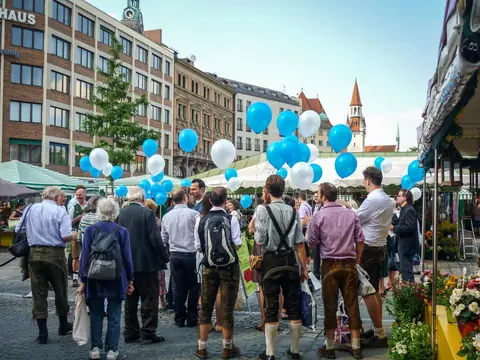
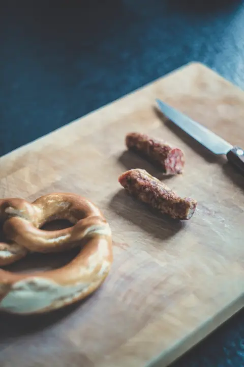
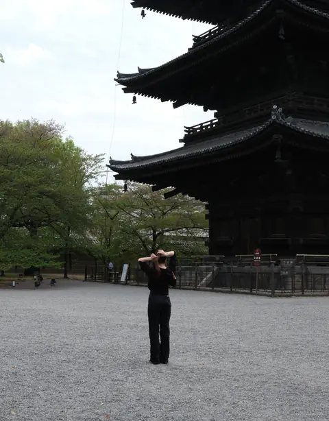
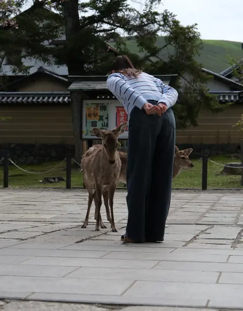
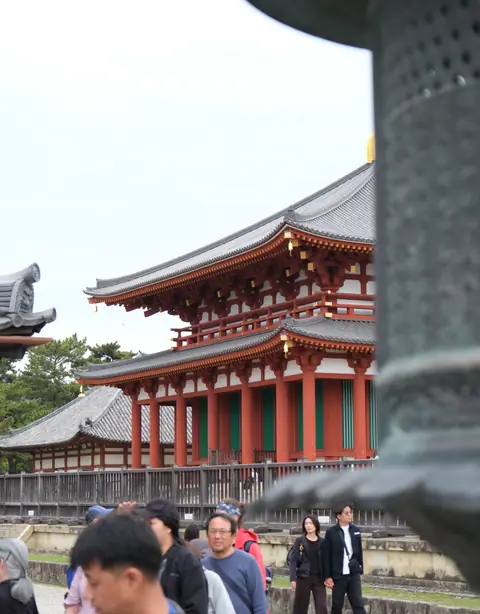
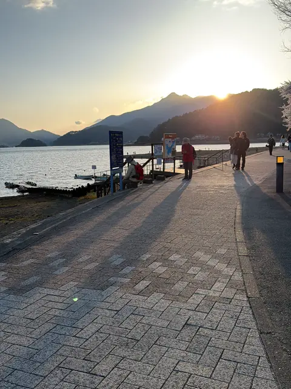
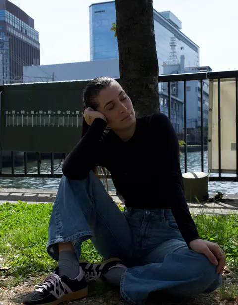
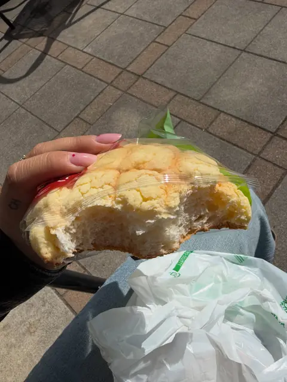
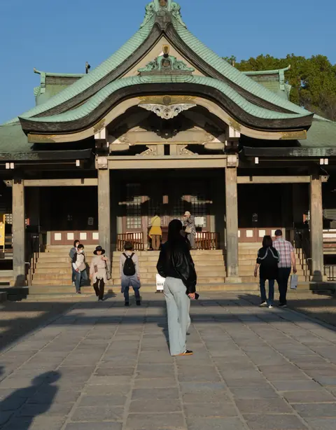

Home / Esperienze
Il diario di bordo
Dove siamo già stati.
Foto vere, momenti veri. Tocca una polaroid per ingrandirla.
2 – 4 ottobre 2026 · Monaco di Baviera
ARound the Oktoberfest
Il primo weekend della community: tre giorni tra tendoni, brezel e boccali, con ragazzi e ragazze che prima non si conoscevano e sono tornati a casa amici.


Primavera 2026 · Tokyo · Fuji · Kyoto · Nara · Osaka
Giappone, primavera 2026
“Il viaggio più bello della mia vita.” Combini a ogni ora, il Fuji sopra il lago, i cervi che fanno l’inchino e i ciliegi in fiore ovunque. Da qui è nata l’idea di tornarci con voi.







Il prossimo ricordo
Il prossimo album lo riempiamo insieme.
Dai un’occhiata alle prossime partenze: c’è ancora posto.